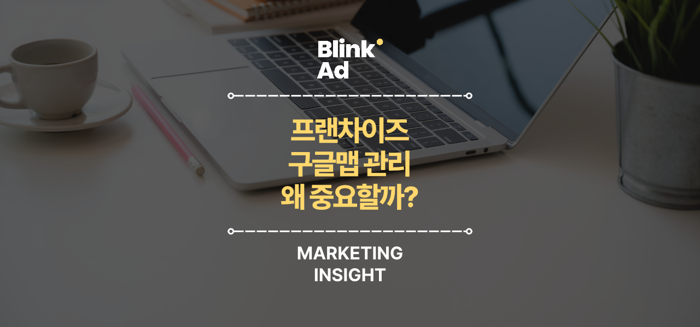
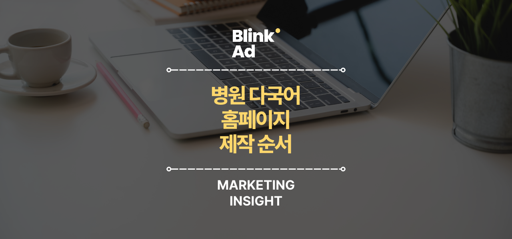
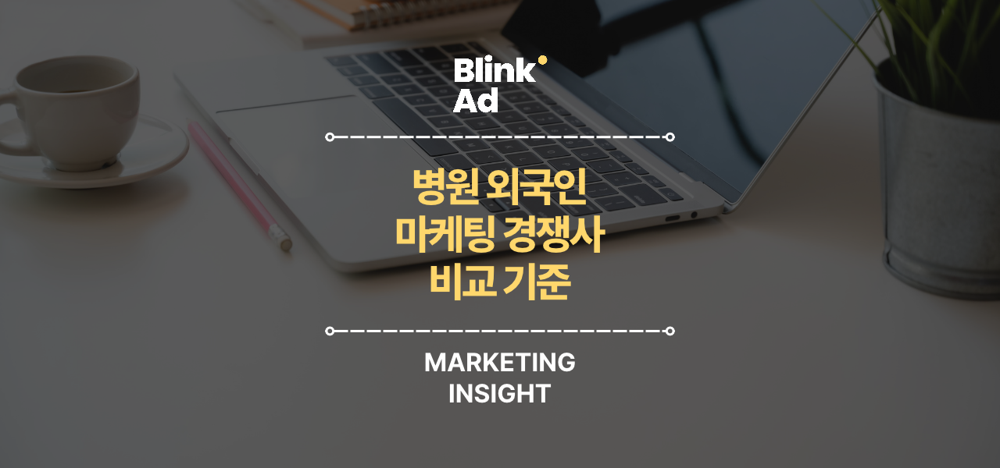

BLINK AD · NAVER PREMIUM · 2026.10.28
기존 Canva 양식 · 1280 × 600 PNG · 각 이미지를 누르면 원본 크기로 열립니다.

프랜차이즈 / 구글맵 관리 / 왜 중요할까?

병원 다국어 / 홈페이지 / 제작 순서
외국인 마케팅 / 구글광고도 / 해야 할까?
영어권 고객 / 레딧 마케팅 / 중요한 이유

병원 외국인 / 마케팅 경쟁사 / 비교 기준